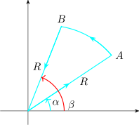

Let \(\hspace {0.2cm} z_{i-1} = z(s_{i-1})\hspace {0.1cm}\), writing \(\Delta z_i = z_i - z_{i-1}\) and taking \(z_i^*\) to be any point on the arc \(C_i\), we form a sum
\[S_n = \sum ^n_{i=1} f\big (z^*_i\big )\Delta z_i\]
Let \(f(z)\) be such that when \(n\longrightarrow \infty \hspace {0.3cm}\max \begin {vmatrix} \Delta z_i\\ \end {vmatrix} \longrightarrow 0\), the complex number \(S_n\) approaches a limit \(S\) which is independent of the way
the curve is partitioned.
We define \(S\) as the integral of \(f(z)\) with respect to \(z\) taken as the contour \(C\) denoted by \[S = \int _r f(z)dz = \lim \limits _{n \rightarrow \infty } \Bigg [\sum ^n_{i = 1} f\big (z^*_i\big )\Delta z_i \Bigg ]\]
On the contour \(C\), we write \(\hspace {0.3cm}z(t) = x(t) + iy(t),\hspace {0.3cm} \alpha \leq t\leq \beta \hspace {0.2cm}\cdots \cdots \cdots \hspace {0.2cm}(1)\)
Let \(\hspace {0.2cm}f(t) = u(x,y) + iv(x,y)\hspace {0.2cm}\) where \(u(x,y) = u\big (x(t), y(t)\big ),\hspace {0.2cm} v(x,y) = v\big (x(t), y(t)\big )\) are piecewise continuous functions of \(t\). Then
\[\boxed {\int _Cf(z) dz = \int ^{\beta }_{\alpha } f(z(t))\hspace {0.1cm}z'(t)dt\hspace {0.2cm}\cdots \cdots \cdots \hspace {0.3cm}(2)\\}\]
Since \(f(z(t))z'(t) = \big [u(x(t),y(t)) + iy(x(t),y(t))\big ]\big (x'(t) + iy'(t)\big )\) substitute this in \((2)\) then \[\int _Cf(z)dz = \int ^{\beta }_{\alpha } \big (ux' - vy'\big )dt + i\int ^{\beta }_{\alpha }\big (vx' - uy'\big )dt\hspace {0.2cm}\cdots \cdots \cdots \hspace {0.2cm} (3)\]
In terms of the \(x\) and \(y\) as variables we have
\[\int _C f(z)dz = \int _C udx - vdy + i \int _Cvdx + udy\]
Proposition
Let \(C\) be a piecewise smooth curve, and suppose that \(f\) is continuous on \(C\), then
If \(C\) comprises of \(n\) smooth arcs \(C_1,C_2, \cdots \cdots \cdots , C_n\) joined end to end, then \[\int _Cf(z)dz = \int \limits _{C_1} f(z)dz + \cdots \cdots \cdots + \int \limits _{C_n} f(z)dz = \sum ^n_{i = 1} \Bigg [\int \limits _{C_i} f(z)dz\Bigg ]\]
Example
Consider the following diagram
Evaluate \(\displaystyle {I = \int z^2 dz}\) on a smooth curve from point \(O\) to point \(B\).
Solution
If we evaluate \(I\) along the straight line \(OB\) with equation. We call this \(\displaystyle {I_1 = \int \limits _{OB}z^2dz}\) \(z = x + iy\) in terms of \(y\). \begin {align*} z^2 & = (x + iy )^2 = (x^2 - y^2) + i 2xy\hspace {0.3cm} 0\leq y\leq 1\\ & = (4y^2 - y^2) + i (2(2y)y)\\ & = 3y^2 + i4y^2 \end {align*}
\begin {align*} I_1 & = \int ^1_0(3y^2 + 4y^2)(2+ i)dy\\ & = (3 + 4i)(2 + i) \int ^1_0 y^2 dy\\ & = \dfrac {2}{3} + \dfrac {11}{3}i\\\\ \end {align*}
OR, we may evaluate \(I\) via the path \(OAB\), call it \(I_2\) \[I_2 = \int \limits _{OA}z^2dz + \int \limits _{AB}z^2dz\]
Now, on \(OA,\hspace {0.2cm} z(x) = x + 0i = x,\hspace {0.3cm} 0 \leq x \leq 2\)
On \(AB,\hspace {0.2cm} z(y) = 2 + yi,\hspace {0.3cm} 0\leq y \leq 1\) \begin {align*} I_2 & = \int ^2_0x^2dx + \int ^1_0(2 + iy)^2dy\\ & = \dfrac {8}{3} + i\Bigg [\int ^1_0(4 - y^2)dy + 4i\int ^1_0ydy\Bigg ]\\ & = \dfrac {8}{3} + i \Big (4 - \dfrac {1}{3}\Big ) - 2\\ & = \dfrac {2}{3} + \dfrac {11}{3}i\\ \end {align*}

Note that \(I_1 = I_2\), thus the value of \(I\) is independent of path.
So if the question was to evaluate \(\displaystyle {\int z^2 dz}\) around the closed path

We have \(I_1 - I_2 = 0\)
Example
Evaluate \(\displaystyle {\int _C \dfrac {dz}{z - z_0}}\) where \(C\) is the contour around the region \(\hspace {0.1cm}R_1 < \begin {vmatrix} z - z_0\\ \end {vmatrix} < R_2\).
Solution

Clearly, \(C\) denotes the inner and outer boundaries of the region \begin {align*} \int _C \dfrac {dz}{z - z_0} & = \int _{C_1} \dfrac {dz}{z - z_0} + \int _{C_2} \dfrac {dz}{z - z_0}\\\\ & = \int ^{2\pi }_0\dfrac {iR_1e^{i\theta }d\theta }{R_1e^{i\theta }} + \int ^{2\pi }_0 \dfrac {iR_2e^{i\theta }d\theta }{R_2e^{i\theta }}\\\\ & = i\int ^{2\pi }_0d\theta + i \int ^{2\pi }_0 d\theta \\\\ & = 2\pi i - 2\pi i \\ & = 0\\\\ \end {align*}
Example
Evaluate \(\displaystyle {\int \big ( z + 2\overline {z}\big )dz}\) where \(C\) is the contour given by

Here, contour \(C\) is \(OABC\).
Example
Evaluate \(\displaystyle {\int \dfrac {dz}{z^{1/4}}}\) where \(C\) is the circle \(\begin {vmatrix} z\\ \end {vmatrix} = 1\)
Working
We make \(z^{1/4}\) single valued if \(z = re^{i\theta }\), we see that for branches of \(z^{1/4} = w\) are
\[ w_k = r^{1/4}\exp \Bigg [i\dfrac {\theta _0 + 2k\pi )}{4} \Bigg ],\hspace {0.3cm} k = 0, 1, 2, 3\]
Setting \(z= 1\), so that \(\begin {vmatrix} z\\ \end {vmatrix} = 1,\hspace {0.3cm} Arg(z) = 0\)
\begin {align*} \text {We get}\hspace {0.5cm} w_k(1) & = (1)^{1/4}\exp \Bigg (\dfrac {k\pi i}{2}\Bigg )\hspace {0.2cm} , \hspace {0.3cm} k = 0, 1, 2, 3\\\\ w_0(1) & = 1\\ w_1(1) & = i\\ w_2(1) & = -1\\ w_3(1) & = -i \end {align*}
Now, since the center involves \(\begin {vmatrix} z\\ \end {vmatrix} = 1\), or \(C\), we have \(z = e^{i\theta }\) and \(dz = ie^{i\theta }d\theta \)
\begin {align*} \text {Thus}\hspace {0.3cm} \int _C \dfrac {1}{z^{1/4}}dz & = \int _{\pi /2}^{5\pi /2}\dfrac {i e^{i\theta }}{-ie^{i\theta /4}}d\theta \\\\ & = - \int _{\pi /2}^{5\pi /2} e^{i3\theta /4}d\theta \\ \end {align*}
Examples